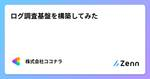

株式会社ココナラさんのフィード
https://zenn.dev/coconala
株式会社ココナラのテックブログ用アカウントです。 ココナラに所属するエンジニアが多様な記事を執筆して公開していきます。 採用情報はこちら → https://coconala.co.jp/recruit/engineer ココナラWebサイト→ https://coconala
フィード

ログ調査基盤を構築してみた
株式会社ココナラさんのフィード
こんにちは。株式会社ココナラのインフラ・SREチーム所属の かず です。システム運用において、有事の際に迅速かつ適切なシステム稼働状況の確認は欠かせません。その手段の1つとして、ログの調査や分析の効率化は切っても切れない関係です。システムが成長するにあわせ、ログの種類や量が多くなり、結果としてログの調査や分析が難しくなるのはよくある話かと思います。弊社でもサービスのグロースに伴って、ログの種類や量が多くなり、結果としてログの調査や分析で課題を抱えていました。具体的には以下の2点です。ログから原因調査を行うには、複数ログを横断・突き合わせが必要ログの追跡に必要な情報がログに...
1日前

CSSの進化がすごい！モダンCSS8選 9
9
株式会社ココナラさんのフィード
こんにちは！株式会社ココナラフロントエンド開発グループの雨嶋です。最近の CSS の進化はすさまじいです。今までは Javascript 数行で実装していた部分が CSS1 行で済んだりします。ただ知ってないと使えないので、自分の勉強も兼ねて便利そうな CSS を 8 個選定しました。大体モダンな CSS を選定したつもりですが、もうモダンではないものもあるかもしれません。（いつからがモダンなのか、、）本記事ではそれぞれ軽く説明するに留めますので、詳細については MDN Web Docs などで調べていただければと思います。 コンテナクエリコンテナクエリは、要素のサイ...
6日前
GithubActionsでPrivateリポジトリへアクセスするときのキーをなくせ
株式会社ココナラさんのフィード
こんにちは、インフラ・SREチームのよしたくです。技術負債の解消を進めているのですが、その取り組みの一部であるキーレス化を紹介します。 鍵の管理人をやっていられるかAWSのIAMユーザーやGCPのサービスアカウントのキー、GithubのPersonalAccessTokenなど、呼び方や種類はさまざまあれど、要はそのユーザーやアカウントになりきることができる鍵は広く使われているのではないでしょうか。ところでそれらの鍵が外部に流出してしまったら大変ですね。強い権限を持つ鍵の場合は、社内でもアクセス制限されているメンバーにわたったら、悪用されかねないです。このような鍵の流出時の...
14日前

「PagerDuty Japan Community Meetup Vol.2」へ登壇しました！
株式会社ココナラさんのフィード
こんにちは！株式会社ココナラでHead of Informationをしている ゆーた（@yuta_k0911）です。今回は3/5（火）にオフライン・オンラインのハイブリッドで開催された PagerDuty Japan Community Meetup Vol.2 へ登壇しましたので、そのレポートです！https://pagerduty.connpass.com/event/309490/本イベントの主催者である jacopenさん とSNSでつながっていたり、別のイベントでもご一緒したことがあり、ご縁があって登壇のお誘いをいただきました！そのきっかけの1つが、昨年のアドベン...
17日前
storybookでVRTを試してみた
株式会社ココナラさんのフィード
こんにちは！株式会社ココナラ フロントエンド開発グループの平原です。本記事では Nuxt × storybook × Chromatic を使用して Visual Regression Testing（以下 VRT）を試してみたのでその内容を紹介します。 はじめに我々の開発現場では、UI コンポーネントの変更や追加が割と頻繁に行われます。機能開発時に加えた変更の影響やデグレを検知できず不具合につながってしまうこともあり、兼ねてより再発防止策としての導入が検討されてきました。また、デグレチェックが膨大な量になることで既存実装をなかなか変更できず個別最適になってしまったり、止む...
21日前
ココナラのCDN構成についてご紹介
株式会社ココナラさんのフィード
お久しぶりです。株式会社ココナラのシステムプラットフォーム部インフラ・SREチームに所属している ぐっさん です。前回はAWSへログインするための仕組みを見直しした際のことをご紹介させていただきましたが、今回は打って変わってココナラで利用しているCDNについてご紹介しようかと思います。 CDNとはそもそもCDNとは何かということをざっくりと説明すると、ユーザーがWebサイトにアクセスした際に受け取るコンテンツを配信専用のサーバーにキャッシュとして持たせて配信することでユーザーに高速に届ける仕組みです。CDNはコンテンツを配信することに特化しているため、高速かつ障害性にも優れて...
1ヶ月前
エンジニアの評価制度についてディスカッションしてきました
株式会社ココナラさんのフィード
こんにちは！ 株式会社ココナラで執行役員 VP of Engineeringの村上です。今回は2/15(木)に開催されたオフラインイベントに登壇してきましたのでその報告です。テックカンパニーにおけるエンジニア評価の重要性イベントとしては、エンジニア評価制度がテーマとなっています。主にこれからエンジニア向けの評価制度を設計していきたいと思っている方や運用していて悩みがある方などを対象として、各社の運用を紹介したり、気になる疑問に対してディスカッションするという内容です。 イベント会場本イベントは、BuySell Technologies社のオフィスをお借りして開催させていた...
1ヶ月前
2024年上期 フロントエンド開発グループのオフサイトミーティングレポート！
株式会社ココナラさんのフィード
はじめにこんにちは！2023年10月にフロントエンドエンジニアとして株式会社ココナラに入社したよっちと申します！本記事は、先日開催されたフロントエンド開発グループのオフサイトミーティングのレポートになります！私自身初めてのオフサイトミーティングでしたが運営のサポートをさせていただいたので、当日の様子や感じたことを書いていきます！ オフサイトミーティングとは？オフサイトミーティングとは、普段の職場や現場から離れた場所でミーティングを行うことです。オフィスから離れることで気楽にリラックスした状態で話し合うことでき、よりオープンなコミュニケーションを取ることができます。そ...
1ヶ月前
『GENBA #2 〜Front-End Opsの現場〜』へ登壇します！
株式会社ココナラさんのフィード
こんにちは。株式会社ココナラ フロントエンド開発グループの新田です。2/21（水）に開催されるイベント『GENBA #2 〜Front-End Opsの現場〜』へ登壇しますので、その告知です！イベントページはこちらです。https://timeedev.connpass.com/event/308783/開催概要は以下の通りです。── 現場主義でプラクティカルな勉強会「GENBA」は現場主義の勉強会です。明日から役立つ、仕事に使える知識の共有を目指し、抽象的な話よりも具体でプラクティカルであることがコンセプトの新しい勉強会シリーズです。第2回目はFront-End ...
1ヶ月前
「TechBrew in 東京 〜SRE大集合！信頼性を高める取り組み〜」へ登壇しました！
株式会社ココナラさんのフィード
こんにちは。株式会社ココナラのインフラ・SRE チームに所属しているKKと申します。2/14(水)に開催されたFindyさん主催 「TechBrew in 東京 〜SRE 大集合！信頼性を高める取り組み〜」 に参加しましたので、簡単ですが報告となります。今回は私にとって人生初の、社外イベント登壇でもあったのでその様子についてもお伝えします！ イベント概要開催概要は以下のとおりです。サービスをスピーディに企画や開発をするだけではなく、その後のリリース後の運用も大事とされています。「SRE――Site Reliability Engineer（サイト信頼性エンジニア）」は信...
1ヶ月前
【イベントレポート】第11回社内技術カンファレンス
株式会社ココナラさんのフィード
はじめにこんにちは！株式会社ココナラのアプリ開発グループiOSチームのさだっちです！今回は1月下旬に開催された社内技術カンファレンスのイベントレポートとなります。 社内技術カンファレンスの概要ココナラでは半年に1度、社内のエンジニアが集まって技術カンファレンスを開催しています。2部構成となっており、1部ではテックブログの表彰とLTを中心に行い、2部では懇親会が開かれています。組織拡大によりエンジニアだけで70人を超える中、普段関わりが薄い部署のエンジニアとの交流もできるイベントとなってます！ 当日について テックブログの表彰VPoEのむーさんから開会の挨拶...
2ヶ月前
ちょっと踏み込んだオフサイト！
株式会社ココナラさんのフィード
これはちょっと踏み込んだオフサイトをやってみたかったんだ、という記事になります。お久しぶりです。ココナラ DevOps開発グループ 業務システムチームのY.S.です。 はじめに1回目を参考に企画を考えていたのですが、ここから発展・深化したものを用意するとなると案外簡単じゃないぞ……うーん、メンバー間のアイスブレイク的なものは終わっていて、似たことをやってもな……。ここからどういう方向に進むべきかがまず先立って課題となりました。例えばチームビルディング的なものを行うにせよ、もう少し踏み込んだ内容にしたいよね……という気持ちでああでもないこうでもないと七転八倒する羽目に。最終的に下記の...
2ヶ月前
5W1Hを使って監視設計をスムースに行う
株式会社ココナラさんのフィード
こんにちは。株式会社ココナラでインフラ・SREを担当しているクララです。本記事では、インフラリソースのメトリクス監視を一例に、5W1Hを使って監視設計をスムースに行う方法をお話しします。 はじめに一口に監視(モニタリング)と言っても、用途や立場、システム規模などの変数でベストプラクティスは異なります。本記事では5W1Hという考え方を使って、変数を一つずつ固定することで必要な監視システムの姿を明確にします。大きく以下2点をお話しします。Why, Who, Whenから要件を導く要件からWhere, What, Howを考える そもそも5W1Hってなに？何かを考...
2ヶ月前
チーム開発にSwiftUIを導入してみて感じたメリットと困ったこと
株式会社ココナラさんのフィード
株式会社ココナラアプリ開発グループ、iOSチームの上田です。以前こちらの記事でどのような手順でSwiftUIを導入したかを紹介致しました。今回はその後、SwiftUIを導入して感じたメリットや、逆に導入してみて困ったこと・苦戦したことなどのデメリットを紹介していこうと思います！ 導入して感じたメリットまず導入して感じたメリットからご紹介したいと思います。 開発速度向上一番大きく感じたのが開発速度、開発体験の向上です。ココナラiOSアプリではStoryboardが肥大化しており、一部のStoryboardでは、開いただけでXCodeが固まってしまい、レイアウトの変更に苦戦...
2ヶ月前
開発行動指針「Project Core Value」浸透推進メンバー2期生としての活動を紹介します
株式会社ココナラさんのフィード
はじめにこんにちは！プロダクト開発部バックエンド開発グループでエンジニアをしております、しままりと申します。今回は チームココナラ流・開発行動指針「Project Core Value」（以下、PCV）」 の浸透推進チームメンバー2期生として活動した内容を紹介させて頂きます。 PCVとは？「バリューを開発組織でどう実践するか？」を表現したもので、「最速で最大の価値を提供する」ための16の行動指針から成り立っています。取り組みのゴールは、作った行動指針が現場で浸透し、それによって「あ！うちの開発組織の雰囲気、変わったな！」と実感が持てるようになること、その状態が維持される...
2ヶ月前
グループ内でGrafana勉強会を開いてみた話
株式会社ココナラさんのフィード
こんにちは！株式会社ココナラプロダクト開発部バックエンド開発グループ（以降、「バックエンドG」と表記）でエンジニアをしております ぽったー です。初めてのテックブログ投稿です。最近のマイブームは麻雀と休日のアプリ開発です。今回は今年の5月に入社してすぐにグループ内でGrafana勉強会を開いてみた話をしたいと思います。 Grafanaって？Grafanaは公式ページを意訳すると、「オープンソースのデータ可視化、監視ソリューション」となります。https://grafana.com/oss/grafana/要するに、データの可視化ツールです。私の所属するバックエンドGで...
3ヶ月前
ココナラのバックエンドエンジニアの開発環境を調査してみた
株式会社ココナラさんのフィード
こんにちは！開発環境は利便性よりもかわいさ、がモットーのちっぴーと申します。株式会社ココナラで、バックエンドエンジニアをしております。ココナラでは、ターミナルやエディタなどの開発環境は個人の自由となっており、各メンバーが自分の好みに合わせた開発環境で、日々の開発業務を行っております。そこで、メンバーがどんな環境で開発しているのかアンケートをとってみたので、その回答をみなさんに共有します。新しい開発環境を整える際や、既存の環境を見直す際の参考になれば幸いです。 アンケート結果回答してくれたのはバックエンド開発グループに所属するエンジニア13名です。 ハードウェア編...
3ヶ月前
AWS×ココナラ×アスエネの合同勉強会に参加してきました
株式会社ココナラさんのフィード
インフラ・SREチームでエンジニアをしているおさだですAWS×ココナラ×アスエネの合同勉強会に参加してきましたので、その様子をリポートします。 勉強会開催の経緯他のイベントでアスエネVPoEの石坂さんとココナラが繋がりまして、ナレッジ共有・情報交換を目的とした勉強会をやりたいという話になり、開催に至りました。会場はいつもお世話になっているAWSさんの目黒オフィスにお邪魔しました。 勉強会の様子勉強会はAWSさんのファシリテーションのもと、ココナラ、アスエネさんの会社紹介から始まり、それぞれで交互にLTをしていく形で進めました。LTのタイトルは以下の通りで、それぞれ内容...
3ヶ月前
PagerDutyを活用したオンコール運用の軌跡
株式会社ココナラさんのフィード
こんにちは！株式会社ココナラのHead of Informationに任命された ゆーた（@yuta_k0911）です。PagerDuty Advent Calendar 2023の18日目の記事です！https://qiita.com/advent-calendar/2023/pagerdutyココナラでは2016年からPagerDutyを使っています。（私が入社する4年も前から・・・）PagerDuty導入以前のオンコール運用や導入後から現在に至るまでどのような利用・工夫をしていて、今後どう利活用しようとしているか？をアドベントカレンダーの記事にしてみます！私の推し機能...
3ヶ月前
Next Year Con for SREへ登壇しました
株式会社ココナラさんのフィード
こんにちは。インフラ・SREチームのマネージャーをしているよしたく(@yoshitaku1991)です。12/5（火）に行われた「Next Year Con for SRE〜来年の登壇を応援する勉強会〜」へ登壇しましたので、そのレポート記事となります。 イベント概要開催概要は以下の通りです。Reject Conという文化がありますが、それをより広く、ポジティブにということでRejectされた、されてないに関わらず来年こそ登壇するぞ、という想いを抱えたエンジニアが登壇する勉強会です。主にSRE NextなどのSRE関連カンファレンスでRejectされてしまった、来年の...
3ヶ月前